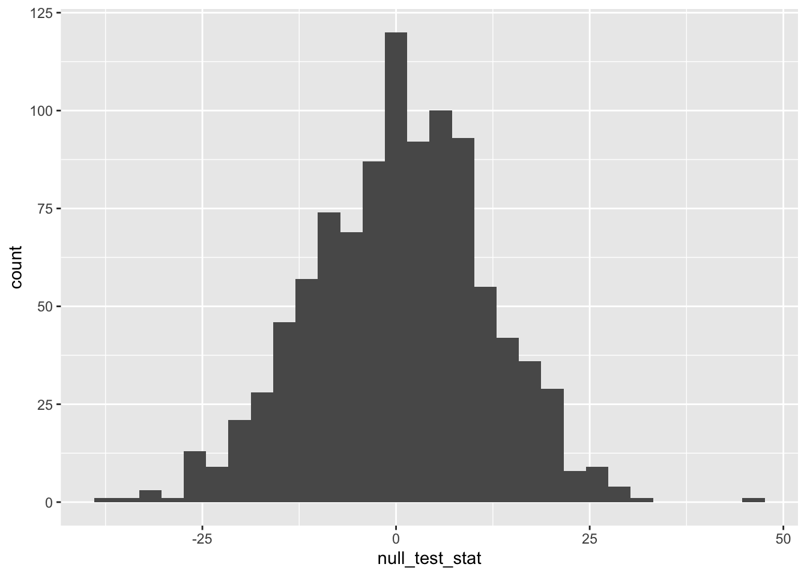

# remember to insert your actual username
reef_fish <- read.csv("biol220_class/students/username/data/reef_fish.csv")5 Statistical Null Hypothesis Testing
5.1 Goals
- Review steps of null hypothesis statistical testing
- Generate null distributions through repeated random sampling
- Test hypotheses with null distributions
5.2 Learning the Tools
5.2.1 Hypothesis testing
The remainder of this course works within the null hypothesis statistical testing (NHST) framework that we will introduce this week. As we will discover, there are six core steps in NHST:
State \(H_0\) and \(H_A\)
Calculate the test statistic
Generate the null distribution
Calculate the \(p\)-value
Decide:
- Reject \(H_0\) if \(p \le \alpha\)
- Fail to reject \(H_0\) if \(p > \alpha\)
For the statistical tests that we encounter during this course, the equations to calculate appropriate test statistics, null distribution of the test statistic, and \(p\)-value are well understood. However, the concepts of null hypothesis testing can often be made more obvious by making a computer simulate the null distribution for us. Such “computationally intensive” null distributions also have important applications beyond learning the concepts—there are many real-world situations where no mathematical equation has ever been derived to calculate the necessary test statistic or null distribution for specific data or null hypotheses. In these cases, the only workable solution is to use a computer to simulate a null distribution.
Let’s have a look at some data and a hypothesis where a “computational null distribution” will both be informative for learning, and also necessary because no mathematical equation exists to define an appropriate null distribution.
5.2.2 Coral reef fish across Polynesia
The Hawaiian Islands and Rapa Nui are unique in the world for their geographic isolation. We might hypothesize that this isolation makes it difficult for organisms to disperse to these islands. Even fish (turns out they swim) might have a difficult time getting there. As such, we might hypothesize that compared to the rest of Polynesia, Hawaiʻi and Rapa Nui might have fewer species of coral reef-associated fishes. Let’s test that out. We have a dataset from Barneche et. al (2019) that compiles surveys of reef fish from across the globe. The Barneche et. al data report total numbers of species found at different sites. We’ll look at just a subset of those sites to test our scientific hypothesis about species richness of reef fish in Polynesia.
Let’s go through the steps of null hypothesis testing:
1. State \(H_0\) and \(H_A\)
- \(H_0\): Between the two groups “Distant Polynesia” (i.e. Hawaiʻi and Rapa Nui) and “Core Polynesia”, there will be no difference in mean species richness
- \(H_A\): There will be a difference in mean species richness between “Distant Polynesia” and “Core Polynesia”
2. Calculate the test statistic
What is the test statistic? The null hypothesis says there will be no difference in the mean richness. So our test statistic will be (mean species richness of Core Polynesia) - (mean species richness of Distant Polynesia).
To calculate that, we need to read-in the data,
# have a look at the data
View(reef_fish)We can see there are columns for region, polynesia_isolation, site, lon (longitude), lat (latitude), and richness (species richness). The polynesia_isolation column was added special for this lab. It has values core_polynisia, distant_polynisia, and NA. NA is for all sites outside of Polynesia. Before we calculate our test statistic, we need to subset our data to just Polynesia. We can do that like this:
# "pol_tri" for polynesian triangle
pol_tri_fish <- subset(reef_fish, !is.na(reef_fish$polynesia_isolation))# have a look
View(pol_tri_fish)Now we will use our friends group_by and summarize from dplyr to help us calculate the test statistic.
library(dplyr)
groups <- group_by(pol_tri_fish, polynesia_isolation)
group_means <- summarize(groups, ybar = mean(richness))
# have a look (this is a small data frame, so we donʻt need
# to use the `View` function)
group_means# A tibble: 2 × 2
polynesia_isolation ybar
<chr> <dbl>
1 core_polynesia 105.
2 distant_polynesia 82.5Now from group_means we can calculate the test statistic of the difference in the means
test_stat <- diff(group_means$ybar)
test_stat[1] -22.5Note: test_stat is the mean of core_polynesia minus the mean of distant_polynesia. The fact that test_stat is negative means that on average there is higher fish species richness in core_polynesia, which aligns with out scientific hypothesis, but will we reject the statistical null or not? For that we need to…
3. Generate the null distribution
Remember a null distribution seeks to capture what our test statistic would look like if the null hypothesis were true. If the null hypothesis were true, then it shouldn’t matter for reef fish richness if we did a survey in Core Polynesia or in Distant Polynesia. That means we can simulate the null distribution by repeatedly shuffling the values of the column polynesia_isolation and then following the same steps for calculating calculating the test statistic. Let’s look at how we would shuffle polynesia_isolation and calculate the test statistic.
# make a new copy of the data for purposes of making
# the null distribution
pol_fish_null <- pol_tri_fishNow we can re-make the polynesia_isolation column as a random shuffle of itself. First, have a look at the behavior of the sample function
# make a simple vector of letters
x <- c("A", "A", "B", "B")
x[1] "A" "A" "B" "B"x <- sample(x)
x[1] "A" "B" "B" "A"We started with x being a orderly sequence A A B B and then used sample to generate a random sequence that happens to be A B B A. If we ran sample(x) again, we’d likely get a different random reshuffling of the letters.
Now let’s use that approach to make our null distribution. For the null distribution we need to make many many many random re-shufflings. But first we’ll look at how we do it just once:
# remember we already made `pol_fish_null` as a copy
# of the real data
# reshuffle the group identities
pol_fish_null$polynesia_isolation <- sample(pol_fish_null$polynesia_isolation)
# follow the same steps as before for calculating the test statistic
groups_null <- group_by(pol_fish_null, polynesia_isolation)
group_means_null <- summarize(groups_null, ybar = mean(richness))
test_stat_null <- diff(group_means_null$ybar)
test_stat_null[1] -9.088235Great! Now we just need to do that over and over again! Luckily we can ask R to do the work for us. We can use the replicate function to do the same task over and over. Let’s look at a simple example first.
Suppose we want to simulate the distribution of outcomes of rolling two dice (and adding their values). We can do one roll like this:
die1 <- sample(6, 1)
die2 <- sample(6, 1)
die1 + die2[1] 9Do do that 20 times, we just copy and paste the above code into replicate:
dice_rolls <- replicate(20, {
die1 <- sample(6, 1)
die2 <- sample(6, 1)
die1 + die2
})
dice_rolls [1] 2 10 10 10 9 5 10 7 4 8 5 8 7 7 3 6 4 7 9 9Cool, we got 20 random outcomes! Notice that we had to paste the three lines of code into “squiggly brackets” {} within the replicate function. That’s just our way of letting R know that those three lines of code all need to be run together, that the whole set of three lines is what we want R to compute 20 times. With this structure, we could ask R to make 20 replicates, or 20,000!
Now we can use the same approach to make the null distribution. Let’s do 1000 re-shufelings to make our null distribution.
null_dist <- replicate(1000, {
# reshuffle the group identities
pol_fish_null$polynesia_isolation <-
sample(pol_fish_null$polynesia_isolation)
# follow the same steps as before for calculating the test statistic
groups_null <- group_by(pol_fish_null, polynesia_isolation)
group_means_null <- summarize(groups_null, ybar = mean(richness))
test_stat_null <- diff(group_means_null$ybar)
test_stat_null
})
# the output of `replicate` will be a vector with 1000 null test statistics
# let's just look at the first little bit
head(null_dist)[1] 1.058824 30.352941 -17.647059 4.588235 -18.264706 -1.235294Let’s visualize the null distribution as a histogram
library(ggplot2)
# notice we need to make a data.frame in order for ggplot to work
null_dist_df <- data.frame(null_test_stat = null_dist)
ggplot(null_dist_df, aes(x = null_test_stat)) +
geom_histogram()
4. Calculate the \(p\)-value
Now we calculate the \(p\)-value. Remember, our default assumption is that we are considering a two-tailed alternative hypothesis. So we need to calculate \(Pr(\text{lower tail}) + Pr(\text{upper tail})\). Our test statistic is -22.5 which is negative, so our lower tail probability will be the proportion of times that null_dist is less than or equal to test_stat, and the upper tail probability will be the proportion of times that null_dist is greater than or equal to -1 * test_stat. Let’s put that in code:
lower_tail <- mean(null_dist <= test_stat)
upper_tail <- mean(null_dist >= -1 * test_stat)
pval <- lower_tail + upper_tail
pval[1] 0.043Wow cool! our \(p\)-value is 0.043. What does that mean?
5. Decide: reject \(H_0\) or fail to reject \(H_0\)
That is the question. Since we’re in biostatistics and the convention in our field is to set \(\alpha = 0.05\), then we will reject \(H_0\) because \(p \le \alpha\), i.e., it is true that 0 \(\le 0.05\).
5.3 Questions
A common hypothesis in the study of biodiversity is that species richness is higher in the tropics. The tropics are defined as any place between the latitudes of -23.43615° and 23.43615°, i.e. 23.43615° south of the equator and 23.43615° north of the equator. Reef ecosystems largely exist only within the tropics, but there are a few interesting and unique types of reef ecosystems outside the tropical latitudes as well. That means we can use our reef fish dataset to test whether reef species richness is higher in the tropics or not.
In questions 1–7 you will conduct the steps of testing this scientific hypothesis with statistical null hypothesis testing.
First we need to do some data manipulation to add a column to our reef fish data that tells us if the sites are tropical or temperate (temperate refers to areas outside the tropics). To get you started, recall this is how we can add a column:
reef_fish$trop_or_temp <- "tropical" View(reef_fish)Now we’ve added one column, but all the values in that column say “tropical”. We need to manipulate that new
trop_or_tempcolumn to say “temperate” for all latitudes outside the tropics. Here’s the code to do that for the Northern Hemisphere:reef_fish$trop_or_temp[reef_fish$lat >= 23.43615] <- "temperate"Now your job is to do the same for the Southern Hemisphere.
Now that we have our column
trop_or_temptelling us which group each data point belongs to, we need to state our null and alternative hypothesesNow calculate our test statistic
Now we generate the null distribution. Let’s do that in two steps:
- Refer to the code where we shuffled the
polynesia_isolationofpol_fish_null. Use that example to make one random reshuffling of thetrop_or_tempcolumn and caculate one null test statistic - Now use the code from (4a.) and refer to the use of the
replicatefunction to simulate a null distribution with 1000 replicates
- Refer to the code where we shuffled the
Plot a histogram of the null distribution
Calculate the \(p\)-value for the two-tailed alternative hypothesis
Decide whether we reject or fail to reject the null hypothesis